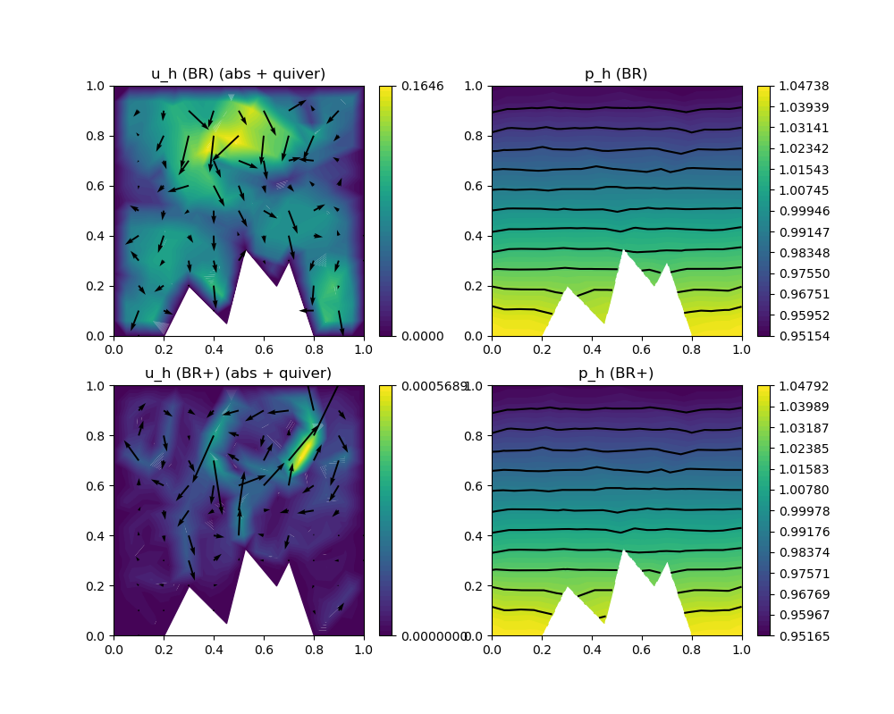

225 : Compressible Stokes 2D
This example solves the compressible Stokes equations where one seeks a (vector-valued) velocity $\mathbf{u}$, a density $\varrho$ and a pressure $p$ such that
\[\begin{aligned} - \mu \Delta \mathbf{u} + \lambda \nabla(\mathrm{div}(\mathbf{u})) + \nabla p & = \mathbf{f} + \varrho \mathbf{g}\\ \mathrm{div}(\varrho \mathbf{u}) & = 0\\ p & = eos(\varrho)\\ \int_\Omega \varrho \, dx & = M\\ \varrho & \geq 0. \end{aligned}\]
Here eos $eos$ is some equation of state function that describes the dependence of the pressure on the density (and further physical quantities like temperature in a more general setting). Moreover, $\mu$ and $\lambda$ are Lame parameters and $\mathbf{f}$ and $\mathbf{g}$ are given right-hand side data.
In this example we solve a analytical toy problem with the prescribed solution
\[\begin{aligned} \mathbf{u}(\mathbf{x}) & =0\\ \varrho(\mathbf{x}) & = 1 - (x_2 - 0.5)/c\\ p &= eos(\varrho) := c \varrho^\gamma \end{aligned}\]
such that $\mathbf{f} = 0$ and $\mathbf{g}$ nonzero to match the prescribed solution. This example is designed to study the well-balanced property of a discretisation. Note that a gradient-robust discretisation (set reconstruct = true below) has a much smaller L2 velocity error (i.e. approximatse the well-balanced state much better). For larger c the problem gets more incompressible which reduces the error further as then the right-hand side is a perfect gradient also when evaluated with the (now closer to a constant) discrete density. See reference below for more details.
"A gradient-robust well-balanced scheme for the compressible isothermal Stokes problem",
M. Akbas, T. Gallouet, A. Gassmann, A. Linke and C. Merdon,
Computer Methods in Applied Mechanics and Engineering 367 (2020),
>Journal-Link< >Preprint-Link<
module Example225_CompressibleStokes2D
using GradientRobustMultiPhysics
using ExtendableGrids
using Printf
# the equation of state
function equation_of_state!(c,gamma)
function closure(pressure,density)
for j = 1 : length(density)
pressure[j] = c*density[j]^gamma
end
end
end
# the exact density (used for initial value of density if configured so)
function exact_density!(M,c)
function closure(result,x::Array{<:Real,1})
result[1] = M*(1.0 - (x[2] - 0.5)/c)
end
end
# gravity right-hand side (just gravity but with opposite sign!)
function rhs_gravity!(gamma,c)
function closure(result,x::Array{<:Real,1})
result[1] = 1.0 - (x[2] - 0.5)/c # = density
result[2] = - result[1]^(gamma-2) * gamma
result[1] = 0.0
end
end
# everything is wrapped in a main function
function main(; verbosity = 0, Plotter = nothing, reconstruct::Bool = true, c = 10, gamma = 1.4, M = 1, shear_modulus = 1e-3, lambda = -1e-3/3)
# set log level
set_verbosity(verbosity)
# load mesh and refine
xgrid = simplexgrid("assets/2d_grid_mountainrange.sg")
# solve without and with reconstruction and plot
Solution = setup_and_solve(xgrid; reconstruct = false, c = c, M = M, lambda = lambda, shear_modulus = shear_modulus, gamma = gamma)
Solution2 = setup_and_solve(xgrid; reconstruct = true, c = c, M = M, lambda = lambda, shear_modulus = shear_modulus, gamma = gamma)
# plot everything
GradientRobustMultiPhysics.plot(xgrid, [Solution[1],Solution[2],Solution2[1],Solution2[2]], [Identity, Identity, Identity, Identity]; add_grid_plot = true, Plotter = Plotter)
# compare L2 error for velocity and density
user_velocity = DataFunction([0,0]; name = "u")
user_density = DataFunction(exact_density!(M,c), [1,2]; name = "ϱ", dependencies = "X", quadorder = 1)
L2VelocityErrorEvaluator = L2ErrorIntegrator(Float64, user_velocity, Identity)
L2DensityErrorEvaluator = L2ErrorIntegrator(Float64, user_density, Identity)
L2error = sqrt(evaluate(L2VelocityErrorEvaluator,Solution[1]))
L2error2 = sqrt(evaluate(L2VelocityErrorEvaluator,Solution2[1]))
L2error3 = sqrt(evaluate(L2DensityErrorEvaluator,Solution[2]))
L2error4 = sqrt(evaluate(L2DensityErrorEvaluator,Solution2[2]))
@printf("\n reconstruct false | true\n")
@printf("================================================\n")
@printf("L2error(Velocity) | %.5e | %.5e \n",L2error,L2error2)
@printf("L2error(Density) | %.5e | %.5e \n",L2error3,L2error4)
end
function setup_and_solve(xgrid; reconstruct = true, c = 1, gamma = 1, M = 1, shear_modulus = 1, lambda = 0, verbosity = 0)
# negotiate edata functions to the package
user_density = DataFunction(exact_density!(M,c), [1,2]; name = "ϱ", dependencies = "X", quadorder = 1)
user_gravity = DataFunction(rhs_gravity!(gamma,c), [2,2]; name = "g", dependencies = "X", quadorder = 1)
# solver parameters
timestep = 2 * shear_modulus / c
initial_density_bestapprox = true # otherwise we start with a constant density which also works but takes longer
maxTimeSteps = 1000 # termination criterion 1
stationarity_threshold = 1e-12/shear_modulus # stop when change is below this treshold
# set finite element type [velocity, density, pressure]
FETypes = [H1BR{2}, H1P0{1}, H1P0{1}] # Bernardi--Raugel
# set function operators depending on reconstruct
if reconstruct
VeloIdentity = ReconstructionIdentity{HDIVBDM1{2}} # identity operator for gradient-robust scheme
VeloDivergence = ReconstructionDivergence{HDIVBDM1{2}} # divergence operator for gradient-robust scheme
else # classical choices
VeloIdentity = Identity
VeloDivergence = Divergence
end
# generate empty PDEDescription for three unknowns
# unknown 1 : velocity v (vector-valued)
# unknown 2 : density ϱ
# unknown 3 : pressure p
Problem = PDEDescription("compressible Stokes problem")
add_unknown!(Problem; unknown_name = "v", equation_name = "momentum equation")
add_unknown!(Problem; unknown_name = "ϱ", equation_name = "continuity equation")
add_unknown!(Problem; unknown_name = "p", equation_name = "equation of state")
add_boundarydata!(Problem, 1, [1,2,3,4], HomogeneousDirichletBoundary)
# momentum equation
add_operator!(Problem, [1,1], LaplaceOperator(2*shear_modulus; store = true))
if lambda != 0
add_operator!(Problem, [1,1], AbstractBilinearForm([VeloDivergence,VeloDivergence]; name = "λ (div(u),div(v))", factor = lambda, store = true))
end
add_operator!(Problem, [1,3], AbstractBilinearForm([Divergence,Identity]; name = "(div(v),p)", factor = -1, store = true))
function gravity_action()
temp = zeros(Float64,2)
function closure(result,input,x, t)
eval!(temp, user_gravity, x, t)
result[1] = - temp[1] * input[1] - temp[2] * input[2]
end
gravity_action = Action(Float64, closure, [1,2]; name = "gravity action", dependencies = "XT", quadorder = user_gravity.quadorder)
end
add_operator!(Problem, [1,2], AbstractBilinearForm([VeloIdentity,Identity],gravity_action(); name = "ϱ(g ⋅ v)", store = true))
# continuity equation (by FV upwind on triangles)
add_operator!(Problem, [2,2], FVConvectionDiffusionOperator(1))
# equation of state (by best-approximation, P0 mass matrix is diagonal)
eos_action_kernel = ActionKernel(equation_of_state!(c,gamma),[1,1]; dependencies = "", quadorder = 0)
eos_action = Action(Float64, eos_action_kernel)
add_operator!(Problem, [3,2], AbstractBilinearForm([Identity,Identity],eos_action; name = "(p,eos(ϱ))", apply_action_to = [2]))
add_operator!(Problem, [3,3], AbstractBilinearForm([Identity,Identity]; name = "(p,q)", factor = -1, store = true))
# generate FESpaces and solution vector
FES = [FESpace{FETypes[1]}(xgrid), FESpace{FETypes[2]}(xgrid), FESpace{FETypes[3]}(xgrid)]
Solution = FEVector{Float64}(["v_h (reconst=$reconstruct)", "ϱ_h (reconst=$reconstruct)", "p_h (reconst=$reconstruct)"],FES)
# initial values for density (bestapproximation or constant)
if initial_density_bestapprox
L2DensityBestapproximationProblem = L2BestapproximationProblem(user_density; bestapprox_boundary_regions = [])
InitialDensity = FEVector{Float64}("ϱ_best",FES[2])
solve!(InitialDensity, L2DensityBestapproximationProblem)
Solution[2][:] = InitialDensity[1][:]
else
for j = 1 : FESpacePD.ndofs
Solution[2][j] = M
end
end
# initial values for pressure obtained from equation of state
equation_of_state!(c,gamma)(Solution[3],Solution[2])
Minit = M * sum(Solution[2][:] .* xgrid[CellVolumes])
# generate time-dependent solver
# we have three equations [1] for velocity, [2] for density, [3] for pressure
# that are set to be iterated one after another via the subiterations argument
# only the density equation is made time-dependent via the timedependent_equations argument
# so we can reuse the other subiteration matrices in each timestep
TCS = TimeControlSolver(Problem, Solution, BackwardEuler;
subiterations = [[1],[2],[3]],
skip_update = [-1,1,-1],
timedependent_equations = [2],
maxiterations = 1,
show_solver_config = true,
check_nonlinear_residual = false)
advance_until_stationarity!(TCS, timestep; maxTimeSteps = maxTimeSteps, stationarity_threshold = stationarity_threshold)
# compute error in mass constraint
Md = sum(Solution[2][:] .* xgrid[CellVolumes])
@printf(" mass_error = %.4e - %.4e = %.4e \n",Minit, Md, abs(Minit-Md))
return Solution
end
endThis page was generated using Literate.jl.
Default output:
julia> Example225_CompressibleStokes2D.main()
SC =
SOLVER-CONFIGURATION
======================
overall nonlinear = true
overall timedependent = true
anderson_iterations = 0
subiterations = [[1], [2], [3]]
show_iteration_details = true
timedependent_equations = [2]
anderson_unknowns = [1]
show_statistics = false
anderson_metric = l2
skip_update = [-1, 1, -1]
linsolver = GradientRobustMultiPhysics.LinearSystem{Float64, Int64, LUFactorization}
damping = 0
time = 0
show_solver_config = true
anderson_damping = 1
check_nonlinear_residual = false
fixed_penalty = 1.0e60
target_residual = 1.0e-10
maxiterations = 1
AssemblyTriggers =
LHS_AT[1] : I T T
LHS_AT[2] : N A N
LHS_AT[3] : N T I
RHS_AT[1] : T
RHS_AT[2] : T
RHS_AT[3] : T
(I = Once, T = EachTimeStep/SubIteration, A = Always, N = Never)
LHS_dependencies = [[1] [1, 2] [1, 3]; [2, 1] [2, 1] [2, 3]; [3, 1] [3, 2] [3]]
STEP | TIME | LSRESIDUAL | CHANGE
| | (total) | v ϱ p
1 | 2.0000e-04 | 3.7091e-14 | 1.8188e+00 7.3359e-03 1.0294e-01
2 | 4.0000e-04 | 3.8918e-14 | 9.8610e-01 2.5020e-03 3.5148e-02
3 | 6.0000e-04 | 2.5681e-14 | 3.7026e-01 1.0843e-03 1.5247e-02
4 | 8.0000e-04 | 4.0585e-14 | 1.5419e-01 5.2031e-04 7.3190e-03
5 | 1.0000e-03 | 3.3751e-14 | 8.4078e-02 2.7468e-04 3.8654e-03
6 | 1.2000e-03 | 3.5704e-14 | 4.5926e-02 1.5144e-04 2.1307e-03
7 | 1.4000e-03 | 4.1659e-14 | 2.8076e-02 8.8467e-05 1.2446e-03
8 | 1.6000e-03 | 3.8551e-14 | 1.7107e-02 5.2099e-05 7.3256e-04
9 | 1.8000e-03 | 3.6318e-14 | 1.0773e-02 3.2068e-05 4.5087e-04
10 | 2.0000e-03 | 2.6645e-14 | 6.8936e-03 1.9498e-05 2.7394e-04
11 | 2.2000e-03 | 3.9919e-14 | 4.3809e-03 1.2355e-05 1.7360e-04
12 | 2.4000e-03 | 3.8099e-14 | 2.8650e-03 7.6447e-06 1.0733e-04
13 | 2.6000e-03 | 2.6228e-14 | 1.8319e-03 4.9295e-06 6.9223e-05
14 | 2.8000e-03 | 3.8592e-14 | 1.2094e-03 3.0848e-06 4.3284e-05
15 | 3.0000e-03 | 3.7472e-14 | 7.7792e-04 2.0117e-06 2.8238e-05
16 | 3.2000e-03 | 2.4742e-14 | 5.1589e-04 1.2697e-06 1.7809e-05
17 | 3.4000e-03 | 2.5434e-14 | 3.3378e-04 8.3455e-07 1.1711e-05
18 | 3.6000e-03 | 2.5681e-14 | 2.2193e-04 5.3068e-07 7.4412e-06
19 | 3.8000e-03 | 2.7404e-14 | 1.4439e-04 3.5086e-07 4.9232e-06
20 | 4.0000e-03 | 2.6764e-14 | 9.6216e-05 2.2472e-07 3.1509e-06
21 | 4.2000e-03 | 2.3766e-14 | 6.2935e-05 1.4931e-07 2.0952e-06
22 | 4.4000e-03 | 2.8698e-14 | 4.2044e-05 9.6341e-08 1.3511e-06
23 | 4.6000e-03 | 3.8181e-14 | 2.7647e-05 6.4300e-08 9.0255e-07
24 | 4.8000e-03 | 2.7691e-14 | 1.8526e-05 4.1818e-08 5.8667e-07
25 | 5.0000e-03 | 4.0933e-14 | 1.2247e-05 2.8034e-08 3.9368e-07
26 | 5.2000e-03 | 4.0429e-14 | 8.2378e-06 1.8387e-08 2.5810e-07
27 | 5.4000e-03 | 2.4356e-14 | 5.4749e-06 1.2384e-08 1.7401e-07
28 | 5.6000e-03 | 2.7861e-14 | 3.6995e-06 8.1951e-09 1.1512e-07
29 | 5.8000e-03 | 3.5793e-14 | 2.4722e-06 5.5469e-09 7.7995e-08
30 | 6.0000e-03 | 2.5925e-14 | 1.6792e-06 3.7049e-09 5.2087e-08
31 | 6.2000e-03 | 2.5925e-14 | 1.1285e-06 2.5208e-09 3.5474e-08
32 | 6.4000e-03 | 2.7918e-14 | 7.7088e-07 1.6994e-09 2.3915e-08
33 | 6.6000e-03 | 3.7346e-14 | 5.2095e-07 1.1626e-09 1.6375e-08
34 | 6.8000e-03 | 3.7219e-14 | 3.5802e-07 7.9088e-10 1.1140e-08
35 | 7.0000e-03 | 4.3801e-14 | 2.4329e-07 5.4400e-10 7.6683e-09
36 | 7.2000e-03 | 3.9919e-14 | 1.6821e-07 3.7319e-10 5.2610e-09
37 | 7.4000e-03 | 4.2928e-14 | 1.1491e-07 2.5804e-10 3.6402e-09
38 | 7.6000e-03 | 2.9080e-14 | 7.9913e-08 1.7835e-10 2.5163e-09
39 | 7.8000e-03 | 3.8099e-14 | 5.4863e-08 1.2392e-10 1.7494e-09
40 | 8.0000e-03 | 3.8551e-14 | 3.8359e-08 8.6208e-11 1.2171e-09
41 | 8.2000e-03 | 4.2447e-14 | 2.6454e-08 6.0160e-11 8.4975e-10
42 | 8.4000e-03 | 3.9601e-14 | 1.8584e-08 4.2077e-11 5.9442e-10
43 | 8.6000e-03 | 3.9281e-14 | 1.2869e-08 2.9474e-11 4.1652e-10
44 | 8.8000e-03 | 2.6407e-14 | 9.0766e-09 2.0706e-11 2.9265e-10
45 | 9.0000e-03 | 2.3700e-14 | 6.3080e-09 1.4551e-11 2.0570e-10
46 | 9.2000e-03 | 2.3964e-14 | 4.4639e-09 1.0258e-11 1.4503e-10
47 | 9.4000e-03 | 3.8877e-14 | 3.1124e-09 7.2278e-12 1.0221e-10
48 | 9.6000e-03 | 4.0546e-14 | 2.2088e-09 5.1091e-12 7.2257e-11
49 | 9.8000e-03 | 3.6231e-14 | 1.5439e-09 3.6078e-12 5.1029e-11
50 | 1.0000e-02 | 3.8592e-14 | 1.0979e-09 2.5552e-12 3.6143e-11
51 | 1.0200e-02 | 2.5803e-14 | 7.6927e-10 1.8072e-12 2.5565e-11
mass_error = 9.8167e-01 - 9.8167e-01 = 8.8818e-16
SC =
SOLVER-CONFIGURATION
======================
overall nonlinear = true
overall timedependent = true
anderson_iterations = 0
subiterations = [[1], [2], [3]]
show_iteration_details = true
timedependent_equations = [2]
anderson_unknowns = [1]
show_statistics = false
anderson_metric = l2
skip_update = [-1, 1, -1]
linsolver = GradientRobustMultiPhysics.LinearSystem{Float64, Int64, LUFactorization}
damping = 0
time = 0
show_solver_config = true
anderson_damping = 1
check_nonlinear_residual = false
fixed_penalty = 1.0e60
target_residual = 1.0e-10
maxiterations = 1
AssemblyTriggers =
LHS_AT[1] : I T T
LHS_AT[2] : N A N
LHS_AT[3] : N T I
RHS_AT[1] : T
RHS_AT[2] : T
RHS_AT[3] : T
(I = Once, T = EachTimeStep/SubIteration, A = Always, N = Never)
LHS_dependencies = [[1] [1, 2] [1, 3]; [2, 1] [2, 1] [2, 3]; [3, 1] [3, 2] [3]]
STEP | TIME | LSRESIDUAL | CHANGE
| | (total) | v ϱ p
1 | 2.0000e-04 | 2.7289e-14 | 8.3755e-03 2.7089e-05 3.7971e-04
2 | 4.0000e-04 | 3.7176e-14 | 1.0154e-02 1.3887e-05 1.9471e-04
3 | 6.0000e-04 | 3.6491e-14 | 5.6374e-03 8.4444e-06 1.1847e-04
4 | 8.0000e-04 | 3.9161e-14 | 3.4777e-03 5.3404e-06 7.4945e-05
5 | 1.0000e-03 | 3.6534e-14 | 2.1968e-03 3.4486e-06 4.8440e-05
6 | 1.2000e-03 | 3.8387e-14 | 1.4192e-03 2.2585e-06 3.1731e-05
7 | 1.4000e-03 | 3.1727e-14 | 9.2169e-04 1.4954e-06 2.1029e-05
8 | 1.6000e-03 | 2.5059e-14 | 6.0581e-04 9.9895e-07 1.4049e-05
9 | 1.8000e-03 | 2.9026e-14 | 4.0140e-04 6.7174e-07 9.4549e-06
10 | 2.0000e-03 | 3.8223e-14 | 2.6691e-04 4.5473e-07 6.4007e-06
11 | 2.2000e-03 | 2.8422e-14 | 1.7975e-04 3.0899e-07 4.3524e-06
12 | 2.4000e-03 | 3.5170e-14 | 1.2059e-04 2.1110e-07 2.9734e-06
13 | 2.6000e-03 | 3.5837e-14 | 8.2281e-05 1.4450e-07 2.0366e-06
14 | 2.8000e-03 | 3.5035e-14 | 5.5581e-05 9.9369e-08 1.4004e-06
15 | 3.0000e-03 | 3.6835e-14 | 3.8307e-05 6.8377e-08 9.6418e-07
16 | 3.2000e-03 | 3.8305e-14 | 2.6016e-05 4.7247e-08 6.6614e-07
17 | 3.4000e-03 | 2.6645e-14 | 1.8066e-05 3.2638e-08 4.6039e-07
18 | 3.6000e-03 | 3.7891e-14 | 1.2323e-05 2.2632e-08 3.1920e-07
19 | 3.8000e-03 | 2.6467e-14 | 8.6040e-06 1.5681e-08 2.2125e-07
20 | 4.0000e-03 | 3.5260e-14 | 5.8889e-06 1.0903e-08 1.5381e-07
21 | 4.2000e-03 | 3.9721e-14 | 4.1278e-06 7.5716e-09 1.0686e-07
22 | 4.4000e-03 | 2.2956e-14 | 2.8332e-06 5.2755e-09 7.4439e-08
23 | 4.6000e-03 | 3.7176e-14 | 1.9914e-06 3.6707e-09 5.1812e-08
24 | 4.8000e-03 | 3.7006e-14 | 1.3701e-06 2.5619e-09 3.6155e-08
25 | 5.0000e-03 | 3.5793e-14 | 9.6489e-07 1.7854e-09 2.5204e-08
26 | 5.2000e-03 | 3.5215e-14 | 6.6523e-07 1.2479e-09 1.7613e-08
27 | 5.4000e-03 | 3.7682e-14 | 4.6912e-07 8.7087e-10 1.2295e-08
28 | 5.6000e-03 | 2.5681e-14 | 3.2403e-07 6.0943e-10 8.6026e-09
29 | 5.8000e-03 | 2.6645e-14 | 2.2872e-07 4.2584e-10 6.0127e-09
30 | 6.0000e-03 | 3.8633e-14 | 1.5825e-07 2.9833e-10 4.2115e-09
31 | 6.2000e-03 | 3.7933e-14 | 1.1178e-07 2.0870e-10 2.9469e-09
32 | 6.4000e-03 | 3.7176e-14 | 7.7465e-08 1.4635e-10 2.0662e-09
33 | 6.6000e-03 | 3.7724e-14 | 5.4749e-08 1.0249e-10 1.4473e-09
34 | 6.8000e-03 | 3.8592e-14 | 3.7997e-08 7.1940e-11 1.0157e-09
35 | 7.0000e-03 | 3.7388e-14 | 2.6866e-08 5.0433e-11 7.1222e-10
36 | 7.2000e-03 | 3.5837e-14 | 1.8673e-08 3.5431e-11 5.0028e-10
37 | 7.4000e-03 | 3.6534e-14 | 1.3207e-08 2.4863e-11 3.5113e-10
38 | 7.6000e-03 | 3.9561e-14 | 9.1923e-09 1.7481e-11 2.4685e-10
39 | 7.8000e-03 | 3.6534e-14 | 6.5039e-09 1.2279e-11 1.7342e-10
40 | 8.0000e-03 | 4.1659e-14 | 4.5330e-09 8.6411e-12 1.2202e-10
41 | 8.2000e-03 | 3.5125e-14 | 3.2082e-09 6.0752e-12 8.5803e-11
42 | 8.4000e-03 | 3.8016e-14 | 2.2389e-09 4.2785e-12 6.0419e-11
43 | 8.6000e-03 | 2.8753e-14 | 1.5851e-09 3.0107e-12 4.2523e-11
44 | 8.8000e-03 | 3.6921e-14 | 1.1076e-09 2.1222e-12 2.9972e-11
45 | 9.0000e-03 | 2.7691e-14 | 7.8449e-10 1.4949e-12 2.1116e-11
mass_error = 9.8167e-01 - 9.8167e-01 = 7.7716e-16
reconstruct false | true
================================================
L2error(Velocity) | 9.78451e-02 | 2.26617e-04
L2error(Density) | 1.95937e-03 | 1.92490e-03 